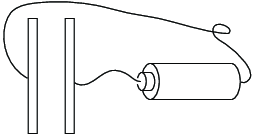
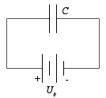

Figuren viser en kondensator som består av to parallelle plater med areal \( A = 1 \, \text{cm}^2 \) og avstand \( d = 1 \, \text{mm} \). Kondensatoren er koblet til et batteri på \( U_0 = 1.5 \, \text{V} \).

a) Hva blir potensialet på hver side av kondensatoren?
Potensialet på den siden av kondensatoren som er koblet til pluss på batteriet blir \( U_0 \) høyere enn på den andre siden.
b) Skisser det elektriske feltet i kondensatoren.
Det elektriske feltet er uniform i kondensatoren.
c) Hva blir ladningen på hver siden av kondensatoren? Vær spesielt nøye med å vise på hvilken side det blir positiv og negativ ladning.
Ladningen blir \( +Q = C(V_1 - V_0) \) på den positive siden (til høyre) og tilsvarende \( -Q \) på den venstre siden. Utregning gir at $$C = \frac{A \epsilon_0}{d} = \frac{(10^{-2} \text{m})^2 \, 8.854 \, 10^{-12} \text{Fm}^{-1}}{10^{-3}\, \text{m}} = 8.854 \, 10^{-13} \, \text{F}$$
d) Lag et kretsdiagram for dette systemet.

e) Anta at positiv strømretning går fra positiv side av batteriet, gjennom kondensatoren og til negativ side av batteriet. Hvilket fortegn har da strømmen i det du kobler kondensatoren til batteriet. Sjekk at dette stemmer med fortegnet ladningen du har funnet på kondensatoren.
Strømmen blir positiv.